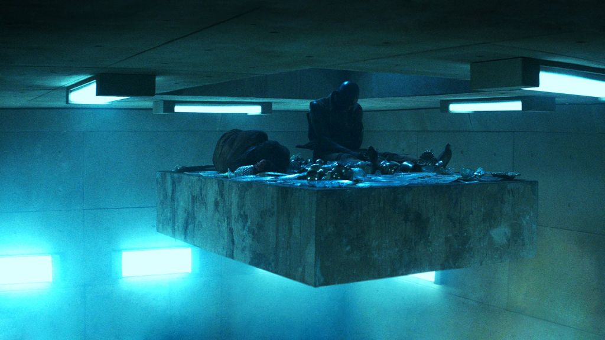
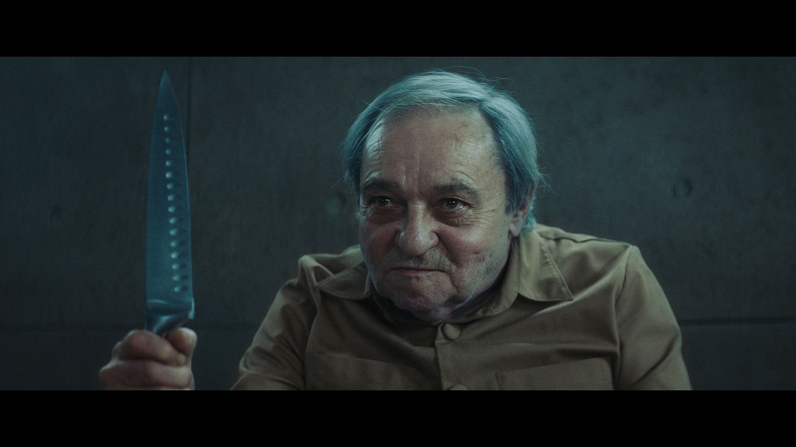

Рецензия на фильм "Платформа" (2019)
Дата публикации: 15.10.2021
Автор публикации: oniquefin
Посмотрел значит Платформу (El hoyo, 2019). Кушать под этот фильм наверное не очень нормально, но меня ничуть не смутило, довольный поточил яблочек 😋🍏 Краткое содержание: тюрьма с этажами по 2 человека, платформа с едой ездиет вниз-вверх. На начальных этажах наедаются вдоволь, а до нижних этажей еда и вовсе не доходит. Внизу с голодухи люди творят полную дичь, убивают и едят друг друга 😬😬😬. Это вызвано тем, что люди выше не могут в нормальное распределение еды "по потребностям" (на самом деле не совсем так, об этом дальше). Человек живёт на этаже месяц, потом его переселяют на другой случайный (или нет? 🤔) этаж. Очевидная трагедия общин, критика капитализма, постоянные микронамёки на то как тяжело и несправедливо быть негром/женщиной/бедным 🤢🤮
Уже очевидно за что фильм можно записать в посредственный и также очевидно за что он понравился современной публике и критикам. На первый взгляд все метафоры фильма умещаются в односложные фразы "капитализм плохо" и "справедливость хорошо". Однако если быть более внимательным к деталям, фильм можно оправдать. Я попробую 💅🏻
В конце фильма выясняется, что этажей 333, то есть по умолчанию должно быть 666 человек 👺. Физически уместить еду для 666 челиков на такую платформу вряд ли представляется возможным, поэтому даже если бы произошла вспышка "спонтанной солидарности", люди не смогли бы распределить еду так чтобы хватило всем. Можно подумать о распределении дней когда кто-то не питается, но это слишком сложно и вообще невозможно потому что яскозал☝🏻☝🏻☝🏻
И именно этот пункт отодвигает от Платформы подозрения на какие-то прямые коммунистические месседжи. Фильм прямо говорит о том, что честно ресурсы распределить не получится. Указывает на причины этому: человеческий (крысиный 🐀) фактор и технические сложности. Путь главного героя и его сокамерника вниз демонстрирует, что люди имеют слишком разные мнения, чтобы уживаться друг с другом и слушать друг друга не собираются. Для одного зрителя это будет обусловлено фундаментальными врождёнными различиями, для другого влиянием среды и социума. Наверное этот пункт и делит среднего зрителя Платформы на тех кому она понравилась, а кому нет. Сам режиссёр открестился от однозначных комментариев, мол, доволен тем что концовка получилась открытой и свободной для интерпретации. Концовка. Открытая она только на пол-шишки. В ней очевидно присутствует недосказанность и незаконченное повествование, но это не мешает закончить мысль фильма. Очень сложно придумать концовке более одной интерпретации (адекватной интерпретации, а не аналогию с кругами ада Данте, взятую с потолка, потому что ну ПОХОЖЕ 🤦♂🤦♂). При чем эта интерпретация неоднозначна как и весь фильм: сначала очевидное сообщение о том что люди готовы к коренным изменениям в обществе (отправка сообщения на нулевой уровень), но при этом понимание главным героем того, что ему пришлось перебить и запугать кучу людей ради достижения своей цели.
Фильм можно было вместить в добротную короткометражку на ютубе (собственно ютуб-канал режиссёра-любителя с хорошим бюджетом это пожалуй и есть уровень фильма 🤧), но зрителю вроде и так норм, поэтому спроса нет, деньги-то занесут. Элементы повесточки, за которые можно было бы поносить фильм, множит на ноль его неоднозначность. Просто потому что сейчас сложно окупить кино, если эта самая повесточка в нём отсутствует. В остальном фильм посредственный, тема пережёвана много раз, однако смотреть не скучно, если вы конечно не постоянный зритель жестоких триллеров с задамаженной психикой 5.5/10 если и рекомендовать то далеко не каждому.